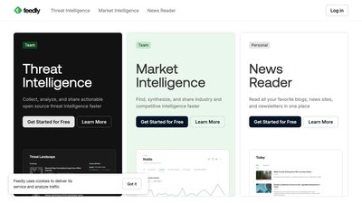
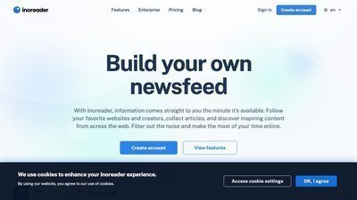
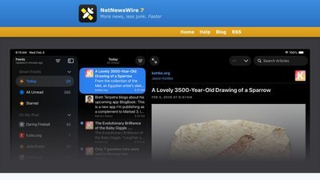
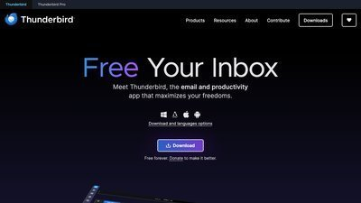

Not sure what RSS is? Keep reading — we'll walk you through it step by step.
On This Page
What is RSS?
RSS (Really Simple Syndication) is a way to follow updates from websites without visiting them individually. Instead of checking dozens of bookmarks every day, an RSS reader collects new articles from all your favorite sites in one place.
Think of it like a personal newspaper that automatically fills itself with articles from sources you choose. There are no algorithms deciding what you see, no ads injected into your feed, and no account or personal information required.
- Stay on top of vulnerability disclosures and security advisories as they happen
- Follow multiple vendor blogs, threat intelligence feeds, and news outlets in one place
- No social media account required — your reading list stays private
- Works offline in many readers — catch up on articles during travel or downtime
How to Subscribe
Getting started takes about two minutes. Here's what to do:
Step 1: Choose an RSS Reader
An RSS reader is an app that fetches and displays articles from feeds you subscribe to. Pick one from the recommendations below, or use one you already have.
If you're not sure which to pick, Feedly is a good starting point — it's free, works in your browser, and has mobile apps.
Step 2: Add the CSOH Feed
In your RSS reader, look for an option like "Add Feed," "Add Subscription," or a + button. Then paste this URL:
Most readers will automatically detect the feed name and start pulling in the latest articles.
Step 3: Start Reading
That's it! New cloud security articles will appear in your reader automatically. Most readers check for updates every 30 minutes to an hour, so you'll always have fresh content waiting for you.
Popular RSS Readers
Here are some well-regarded RSS readers to get you started. All of these have free tiers that work well for personal use.

Feedly
Web-based reader with a clean interface. Works in any browser with optional mobile apps for iOS and Android.
Price: Free (Pro plans available)

Inoreader
Feature-rich web reader with powerful filtering and search. Great for managing a large number of feeds.
Price: Free (Pro plans available)

NetNewsWire
Fast, native app for macOS, iPhone, and iPad. Open source and completely free with no ads or tracking.
Price: Free and open source

Thunderbird
Mozilla's free email client also doubles as an RSS reader. If you already use Thunderbird for email, just add feeds directly.
Price: Free and open source
What You'll Get
The CSOH cloud security news feed includes:
- Curated articles from trusted security news outlets, vendor blogs, and research sources
- Coverage areas: AWS, Azure, GCP vulnerabilities, data breaches, zero-day exploits, security patches, compliance updates, and industry developments
- Article previews with title, summary, source, publication date, and category tags
- Regular updates as new articles are added to the CSOH news collection
- Feed URL: https://csoh.org/feed.xml
- Format: RSS 2.0 (compatible with all major readers)
- Language: English
Frequently Asked Questions
An RSS reader is an app (or website) that collects articles from RSS feeds and displays them in one place. Think of it as a customizable news inbox where you control exactly which sources appear. Unlike social media feeds, there are no algorithms — you see every article from every source you follow, in chronological order.
Yes, completely free. The CSOH RSS feed is open to everyone with no registration, login, or payment required. The RSS readers recommended above also offer free tiers.
New articles are added regularly as they are curated by the CSOH community. Your RSS reader will automatically check for updates (typically every 30–60 minutes) so new articles appear without you doing anything.
Yes! Most RSS readers have mobile apps. Feedly and Inoreader both have iOS and Android apps. NetNewsWire is available for iPhone and iPad.
No problem! You can always visit our News page directly to browse the latest articles. You can also register for our Zoom sessions where we discuss the latest cloud security news live.